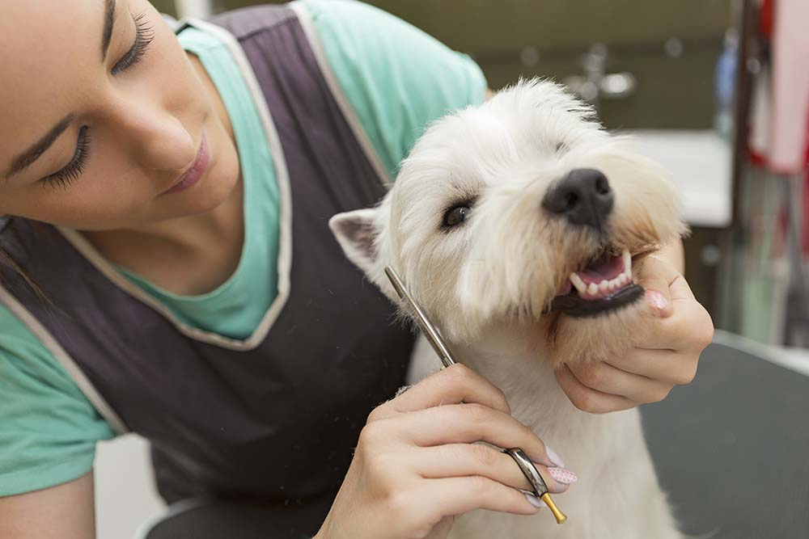

Conoce al equipo de Betty Pet Grooming: ¿Quién cuidará de tu mejor amigo?
Sabemos que tu perro no es solo una mascota, es parte de tu familia. Por eso, entendemos que dejarlo en manos de extraños puede generar ansiedad. ¡Queremos dejar de ser extraños!
Queremos que te sientas tan cómodo viniendo a nuestro local como si visitaras a un viejo amigo. Por eso, hoy queremos presentarte a las manos expertas y los corazones pacientes que se encargarán de mimar a tu mejor amigo: ¡nuestro increíble equipo de groomers!
Juan Vazquéz - Groomer Principal / Fundador(a)
Con más de 10 años de experiencia, Juan Vazquéz es el alma de nuestro negocio. [Él/Ella] no solo es un(a) experto(a) en cortes de raza y técnicas de tijera, sino que tiene una paciencia infinita con los perros más nerviosos.
"Para mí, el grooming no es solo cortar pelo. Es entender lo que el perro necesita", dice Juan Vazquéz. "Mi mayor satisfacción es tomar un perrito que llegó asustado y entregarlo feliz, cómodo y moviendo la cola. ¡Esa transformación es lo que amo de mi trabajo!"
- Especialidad: Cortes de raza (Poodles, Schnauzers), manejo de perros ansiosos.
- Mascota en casa: Un gato llamado Pepe.
Pedro López - Asistente de Grooming / Especialista en Baño
Pedro López es nuestro(a) especialista en deslanado y baños terapéuticos. Él tiene un don especial para hacer que incluso los perros que odian el agua se sientan seguros y relajados durante su baño spa.
"Me encanta el proceso del baño", comenta Pedro López. "Es el momento en que revisamos la piel, damos masajes y nos aseguramos de que salgan oliendo increíble. ¡Soy el responsable de los abrazos post-grooming!"
- Especialidad: Baños medicados, deslanado profundo (de-shedding).
- Mascota en casa: 3 gatos rescatados.
¡Somos Amantes de los Animales, Primero!
Todo nuestro equipo comparte una misma filosofía: Paciencia, Seguridad y Cariño. Cada perro es tratado como si fuera nuestro. Estamos capacitados en primeros auxilios caninos y usamos solo técnicas de refuerzo positivo.
La próxima vez que vengas, ¡no dudes en saludar a Juan Vazquéz y Pedro López! Estamos aquí para responder todas tus preguntas y para asegurarnos de que tu mascota tenga la mejor experiencia posible.
¿Listo para que tu perro conozca a sus nuevos mejores amigos? ¡Agenda tu cita hoy!